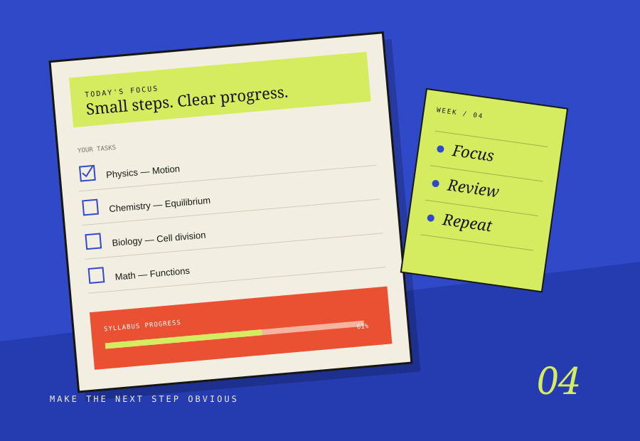

A PLAN THAT CAN SURVIVE A REAL WEEK.
StudyMate
An admission-preparation planner for daily tasks, exams, rescheduling and syllabus progress, with offline access.

THE STARTING POINT
Give the problem
a useful shape.
StudyMate is an admission study planner designed around the changing shape of a real preparation schedule. It helps turn a large syllabus into daily work while keeping unfinished tasks visible and manageable.
The planner combines daily tasks, upcoming exams, task rescheduling, syllabus progress and progress reports. Its offline access is intended to keep the planning flow available even when a connection is unreliable.
WHAT'S IN THE BUILD
- 01Daily task planning and unfinished-task visibility.
- 02Exam scheduling and task rescheduling.
- 03Syllabus progress by subject and track.
- 04Offline access for continuity between sessions.
THE DESIGN INTENT
Reduce the cognitive load of keeping a study plan alive — show the next useful action, not just a giant checklist.